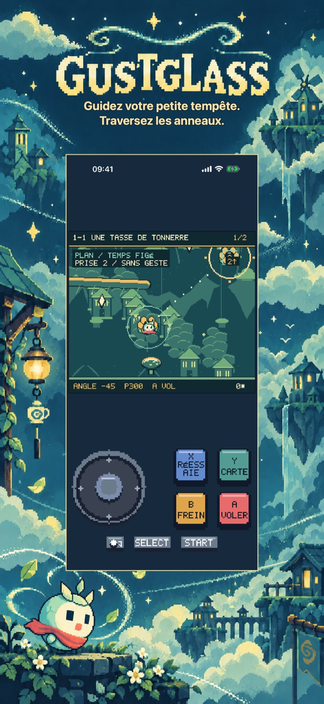
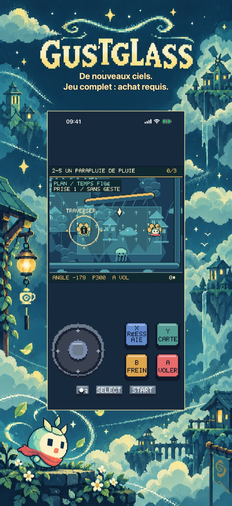
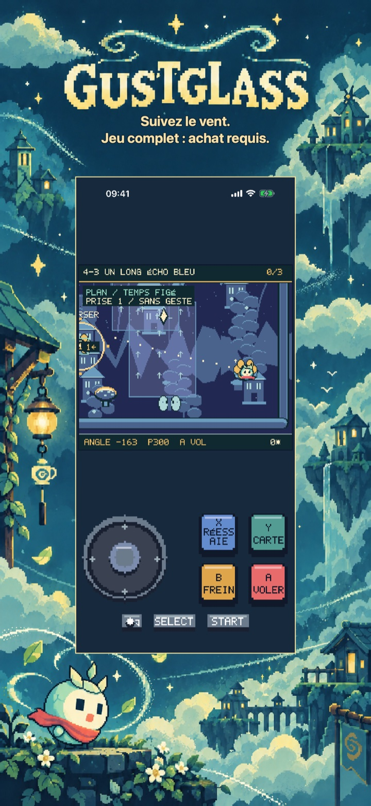
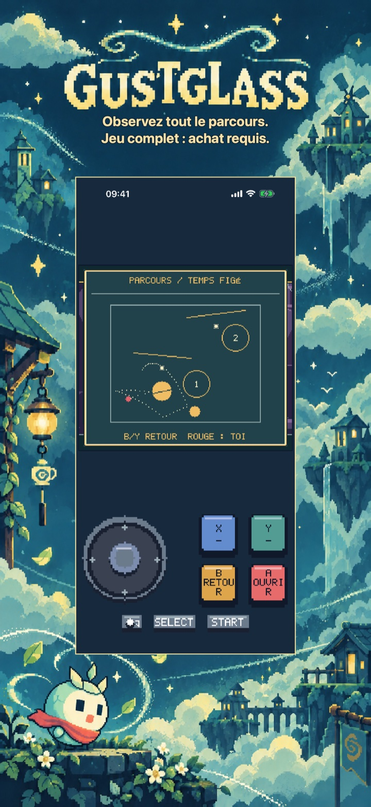
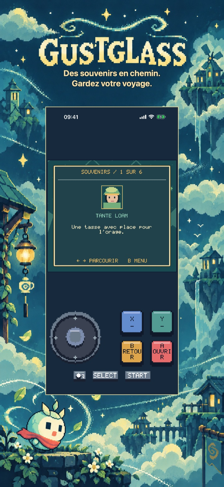
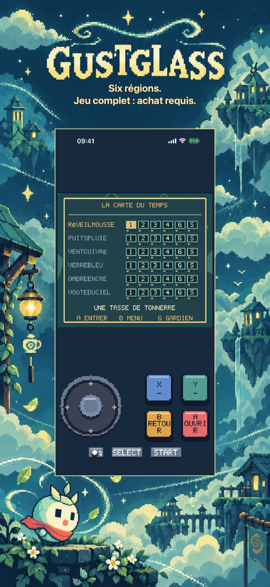

Gustglass : Vols au vent
Gustglass : Vols au vent
Guidez Mica dans de larges anneaux de vent. Planifiez, lancez et réessayez dans six régions, 30 parcours et six grains. Première région gratuite.
Bientôt sur l’App Store
Première région : cinq parcours narratifs complets, gardien compris.

Aventures en pixel art
Un voyage propre à ce jeu
Six régions comprennent 30 parcours narratifs, dont six gardiens, et six grains facultatives. Récupérez fragments et marques de par, jusqu’à 108 marques cumulées. Aucun nombre de vies limité. Le temps de réflexion ne change pas un même tir ; les essais conservent anneaux et fragments. Le voyage est sauvegardé localement.
Commencez gratuitement
Première région : cinq parcours narratifs complets, gardien compris.
Débloque cinq régions de plus, 25 parcours narratifs supplémentaires, les six grains, tous les souvenirs et l’histoire complète avec sa fin.
Achat unique · Sans publicité · Sans abonnement
Gustglass : Vols au vent
Guidez une petite tempête
Trouvez le chemin de Mica, une petite tempête dans une coque de graine fendue.
Planifiez un vol reproductible à travers de larges anneaux de vent numérotés. Réglez angle et puissance au nid, lancez, dirigez doucement et freinez en vol. Branches, vent, eau et rebonds dessinent le parcours. Réessayer restaure angle, puissance et phase météo ; la trace bleue et les points prévus aident à ajuster.
Six régions comprennent 30 parcours narratifs, dont six gardiens, et six grains facultatives. Récupérez fragments et marques de par, jusqu’à 108 marques cumulées. Aucun nombre de vies limité. Le temps de réflexion ne change pas un même tir ; les essais conservent anneaux et fragments. Le voyage est sauvegardé localement.
Première région : cinq parcours narratifs complets, gardien compris.
Débloque cinq régions de plus, 25 parcours narratifs supplémentaires, les six grains, tous les souvenirs et l’histoire complète avec sa fin.
Sans publicité, compte, analyse ni abonnement. Un achat non consommable débloque définitivement le jeu complet. Apple StoreKit gère achats et restaurations ; le prix apparaît avant confirmation. Anglais, espagnol, français, allemand et italien sont inclus. Tout le contenu est intégré localement.
Dans le jeu
Dans le jeu
Six vues natives montrent l’idée principale, deux autres mondes, plus de profondeur, les récompenses du voyage et son accueil ou atlas.
Traversez les anneaux.

Jeu complet : achat requis.

Jeu complet : achat requis.

Jeu complet : achat requis.

Gardez votre voyage.

Jeu complet : achat requis.
Vidéo de jeu en anglais
Une vidéo de jeu de 24 secondes en anglais. Le contenu supplémentaire nécessite un achat unique du jeu complet.
Aide et assistance
Des questions sur Gustglass : Vols au vent ?
Trouvez des réponses pratiques sur les commandes, la progression sauvegardée, le début gratuit et l’achat du jeu complet.
Comment jouer ?
Où ma progression est-elle sauvegardée ?
Que peut-on jouer gratuitement ?
Que débloque l’achat du jeu complet ?
Achat unique · Sans publicité · Sans abonnement
Comment restaurer un achat ?
Mon achat est en attente ou la boutique est indisponible. Que faire ?
Contacter l’assistance
Posez une question ou signalez un problème. Indiquez le nom du jeu, votre appareil et ce qui s’est passé.
Contactez-nous sur GitHubLes signalements sont publics et nécessitent un compte GitHub.